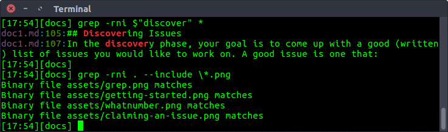

Contributions: Parth Parikh, Kishore Ganesh, Chris Ewald, Cory Massaro, Makrand Rajagopal, Sarthak Kundra
Note: This guide is a part of the Open Source Software Guide we created in Fall 2020 for MLH Fellows. However, I strongly believe that this can be helpful to anyone new to exploring large codebases. If you have any advice on improving this guide, please contact me.
Joker while teaching programming: Real programmers don't comment their code. If it was hard to write, it should be hard to understand.
Alfred Pennyworth to Bruce: Some men aren't looking for anything logical, like software maintenance. They can't be bought, bullied, reasoned, or negotiated with. Some men just want to watch the world burn.
Your pod leader and mentor(s) will send you lists of repositories and outlines of projects you can work on. Investigate those repositories and the associated issues. Most likely, the repositories are already forked in the MLH-Fellowship organization on GitHub, and project boards have been associated with those forks:
The project boards are a great place to start looking for issues.
If your chosen repository has not yet been forked or enriched with a project board, contact the relevant mentor, because they need to step up their game.
Alternatively, you might have a very clear vision about repositories you want to work on or work you’d like to do. Proactivity is encouraged! Make sure you open issues and discussion on GitHub to signal your intentions.
Exploring a new repository can certainly be a daunting task. Many angles come at play - familiarity with the languages, understanding of the tools or frameworks used, how components integrate with each other, what paradigm is used by the developers, etc. The points mentioned in this section will present you with approaches to make this journey smooth.
As mentioned across various discussion threads, the best way to get familiar with any open-source project is to use it. Begin with a very simple idea relevant to the project you are going to contribute to. Then, turn that idea into reality primarily using that open-source project. Throughout the process make sure to learn about the project’s dependencies, features, and important components/classes. Try integrating as many features as you can - remember - your first goal is to explore the breadth of this project.
If the above process takes you on a back-foot, analyze why? Is it because of some tool, language, framework, or something else? Once the why part is inspected, observe how the project is using that technology and read the documentation for the same. If documentation gets dense, jump to the tutorial or watch relevant video presentations by the authors/maintainers. If confusion persists, approach the contributors on the project’s discussion platform (Github discussion, Slack, Discord, etc).
Lastly, the primary purpose of MLH-Fellowship’s kickoff hackathon is to make the fellows extensively use the open-source project they are going to contribute to throughout their fellowship. So make good use of this opportunity.
Always do the hard part first. If the hard part is impossible, why waste time on the easy part? Once the hard part is done, you're home free.
Always do the easy part first. What you think at first is the easy part often turns out to be the hard part. Once the easy part is done, you can concentrate all your efforts on the hard part.
- A. Schapira
Initial commits usually carry with them the entire gist of the project. By analyzing them, you can gain perspective about the initial goals of that repository. Here is the first commit made by BentoML maintainers on April 2, 2019. The README explains the three goals BentoML aims at solving - streamlining deployment workflows, major frameworks support, and DevOps practices built into it. This coupled with /examples, /bentoml/artifacts, and handlers forms a major part of their core component. Moreover, by their 48th commit, they had greatly improved their documentation.
Reading test code tends to be more approachable than application code, likely because programmers don’t write tests in a hurry at 8PM
- arandr
Transitioning from this section to planning can certainly be challenging. To make this switch easy, building the code from the source, reading test cases, and understanding specifications can be incredibly helpful.
Testing is argued to be one of the best forms of documentation. It usually gives an idea of how authors expect things to work. Browsing the tests as example references is a great way to understand any project. If you are planning to write tests for the open-source project, MIT: 6.005 has a great introduction to testing. Remember - tests are there to give you the confidence to refactor and change things freely.
If you do not already have the project cloned and running locally, ensure that this is completed before the planning phase. Follow the installation instructions (usually in DEVELOPMENT.md) on the project to get it running. This step is usually considered complete when you can run the test suite of the project and have all (or most) of the tests pass.
Exploring specifications is another concrete step to understand a large codebase. For example, Runc (a CLI tool for spawning and running containers) has documented a SPEC.md for its libcontainer component - containing detailed configurations for the filesystem, runtime and init process, security, etc.
It is often useful to get a broad high-level picture of where’s what in the code, and this is where something like a UML diagram helps. Many projects include these high-level architecture diagrams in their documentation, so make sure to check out if such diagrams are available.
This is because they are the most concise representation of the entire project and a good one can tell you a lot about how information is flowing across the codebase.
Your project does not have a UML diagram? Fear not, since tools exist to make combing through large codebases easier. One such tool is pyreverse, which can generate a UML class diagram of the codebase you give it automatically.
You can also get an idea of which functions are being called and in what sequence they are being called using call graphs. They are a visual representation of runtime function execution. For example -
class WhatNumber:
def __init__(self):
self.odd_counter = 0
def check(self, number):
if number%2==1:
self.odd(number)
elif number%2==0:
self.even(number)
def odd(self, number):
print("{} is odd".format(number))
self.odd_counter += 1
def even(self, number):
print("{} is even".format(number))
if __name__ == "__main__":
obj = WhatNumber()
obj.check(2)
obj.check(1)
Call-graph of the WhatNumber code
The call graph may also contain other useful augmenting information, such as the time spent on each function call.
As mentioned in this Hacker News thread, you can use version control to identify the most commonly edited files in any open-source codebase. These are usually the files that are doing all the work (80/20 rule) and you likely need to know of them.
The command for the same is -
# For top 10 most edited files
git log --pretty=format: --name-only | sort | uniq -c | sort -rg | head -10
# For top 50 most edited files with file_name/directory_name containing the word - NAME
git log --pretty=format: --name-only | sort | uniq -c | sort -rg | head -50 | grep NAME
One can think effectively only when one is willing to endure suspense and to undergo the trouble of searching.
- J. Dewey
Searching tools are particularly important while navigating large codebases. If the code is public on Github, you can navigate to its repository, press / to fire up Github's search tool, type your query, and get instant search results with highlighting.
For local repositories, using a simple grep command should suffice for most purposes -
# For the command below -
# r - recursively search through directories
# n - print line number
# i - case insensitive search
grep -rni $"PATTERN" *
# To search in specific extensions -
grep -rni . --include \*.EXTENSION
Examples - 
Using ctags and integrating it with vim is another powerful way to search a large codebase -
Universal Ctags generates an index (or tag) file of language objects found in source files for many popular programming languages. This index makes it easy for text editors and other tools to locate the indexed items.
In the discovery phase, your goal is to come up with a good (written) list of issues you would like to work on. A good issue is one that:
Please only look for issues within your assigned Project. MLH mentors recommend starting by searching for issues with the help wanted, good first issue, MLH, or hacktoberfest labels. The mentors also recommend that you start with smaller easier issues at the beginning of the fellowship and work your way up to complex and more difficult issues throughout the program.
In conclusion, select 3 to 5 issues that meet the criteria above. Write them down in a place where you can take notes and expand upon them.
Henry Ford’s factory has been the source of a curious story floating around the interwebz. The premise always involves a colossal factory machine that is malfunctioning, befuddled engineers and a supreme genius who comes in to save the day. The story goes like this: One of the huge steam machines in Ford’s factory starts malfunctioning, and none of Ford’s engineers could figure out what’s going on. But when this genius, usually Nikola Tesla or Charles Proteus Steinmitz, steps in, he’s able to isolate the problem to one small insignificant part that needs a minor correction. The final bill is $10,000.
Ford was of course incredulous, since all the man did was to make a cross on the affected area, so the genius gave his breakup:
$1 for pointing out the part
$9999 for the engineering knowhow to isolate the issue to one section of the system
Such goes the story and you may find yourself in Nikola Tesla’s shoes when you look at a colossal codebase looking to add one small fix. Fear not, for you do not need to be a genius, you just need some basic principles that’ll have you narrowing down the issue to a small, manageable section of the codebase.
In many cases, you can save yourself the detective work since the maintainers of the project often have already identified which areas of the codebase the fix will touch and would have this information available in the issue description itself.
It is pointless to restart from scratch, so make sure you have reviewed all the information that is already available in the issue description.
When you’re getting started, you may be tempted to try to understand everything. Not only is this not necessary, it is going to be actively detrimental to your contribution ability, since 9 times out of 10 you’ll just be more confused.
Most repositories have been around for a substantial amount of time, with several people contributing and extending the codebase, making it grow into what it is now. In most cases, it simply would not be possible to understand every single line of code that’s there and you should try to approach the problem strategically.
Most good open source projects are structured very well, with the folder hierarchy and file names being mostly self explanatory. Usually these hierarchies follow the top down approach: Where the bigger subsystem folders contain their sub parts. You need to gradually zero down on the subsystem you are going to be tackling, as you go down the folder hierarchy, eventually you’ll narrow down your scope of work to a few files in the project, and this is the space you should be confined to while working on the issue.
If you’re fixing a bug, it might be the case that the issue originated somewhere else in the system, but the files you select are a good starting point from which you can try to track down the source of the issue. It certainly is less overwhelming to explore small parts of the codebase than trying to grasp everything that is going on.
If you create a project, you know the ins and outs of it. How do you attain the same mastery over someone else’s project?
As discussed, it would not be possible to gain mastery over a non trivial codebase in a small amount of time. However, you should be aware of the “Paper Cut Principle”, which is basically the idea that as you work on several small issues across the codebase, the underlying understanding of the codebase improves till you have some idea about how everything works in the codebase. That’s how an “outsider” gets familiar with the code, consuming small parts of it over time.
Now that you have identified the scope of your fix, you should consider everything else to be a black box. Identify what sort of inputs your part of the code is getting, how it is being used and what’s being expected out of it.
All of this seems very abstract, but the basic idea is that you don’t need to know everything about how everything else is implemented in order to add anything new. You assume everything else to conform to their specifications and then try to explore the tiny part of the codebase you are focusing on.
Of course, it could be the case that for every change, you need to look at multiple different sections of the codebase and that there are lots of buggy parts. That’s just bad software, however, and you would usually have a clearly defined area you can focus on in mature codebases.
If you are working on squashing a bug, then the absolute first step you should take before planning for a fix is to actually reproduce the issue. The very act of reproducing the issue has you going through the motions of setting up the project, making sure it runs and that everything is configured correctly and finally reproducing the issue.
Having an easy way to reproduce the issue helps in many ways. It helps speed up development and you can (and should) take it one notch further and try to write a test capturing this behavior. With this, not only do you have a way to quickly run tests, it also ensures that future versions of the project would not accidentally cause the issue to pop up again.
You have explored the issue, have narrowed down the scope of interest and now are ready to tackle your issue. If you have figured out the root cause for the bug, then you can proceed to making a solution, but if you’re stuck, one thing that might help you break out of it is to creatively think of potential causes for the problem you’re solving and try to verify whether any of the causes exist.
When you’re trying to think of a solution, then too it helps to brainstorm about multiple ways to solve the problem, since you would be able to compare and contrast a few approaches and zero in on the optimal one.
Hack it, then get it right!
You might get into a state of analysis paralysis when editing files in huge codebases. Many thoughts may cross your head and more often than not, you just remain stuck instead of moving forward because of apprehension about code quality.
This is why it is important to proceed in two phases. The first one where you get it working, till which point it remains on your machine. Some things may be hard coded, a few parts could be optimized upon, but the important thing is that you have something working. To improve it from a working state to a robust state is easier than trying to get everything right the first time.
Get into the spirit of iteration and don’t be afraid to make changes to the code. Once you’re done with your proof of concept, you can proceed towards making it proper.
Another effective (debugging) technique is to explain your code to someone else. This will often cause you to explain the bug to yourself. Sometimes it takes no more than a few sentences, followed by an embarrassed "Never mind, I see what's wrong. Sorry to bother you." This works remarkably well; you can even use non-programmers as listeners. One university computer center kept a teddy bear near the help desk. Students with mysterious bugs were required to explain them to the bear before they could speak to a human counselor.
B. Kernighan & D. Pike (in "The Practice of Programming" pp. 123)
As rightly mentioned by Arandr, it is a positive habit to talk with experienced maintainers and explain your understanding to the new contributors. Both of them involve active thinking of the codebase, and are usually faster than trying the trial-and-error strategy.
Schedule a meeting with your MLH mentor/code-maintainer to go over your plan. Come prepared to your meeting with the most detailed plans you can. A plan can ideally be a breakdown of changes, wherein a breakdown is - what are the major steps that will be needed to make this change? A good rule of thumb here is that every verb that you use should be in it’s own step.
Examples of good step breakdowns:
myApiService.jsgetApiResponse function in myComponent.js into its own class. The public methods in this class will be ...xyz function.During the meeting, the mentor/maintainer will provide you with clarification and improvements to your plan. They may ask to improve certain aspects of your plan or move right to the acceptance phase.
Debugging is an art that needs much further study .... The most effective debugging techniques seem to be those which are designed and built into the program itself -many of today's best programmers will devote nearly half of their programs to facilitating the debugging process on the other half; the first half... will eventually be thrown away, but the net result is a surprising gain in productivity.
Another good debugging practice is to keep a record of every mistake that is made. Even though this will probably be quite embarrassing, such information is invaluable to anyone doing research on the debugging problem, and it will also help you learn how to reduce the number of future errors.
D. Knuth (The Art of Computer Programming, Volume 1)
Debuggers are one of the strongest tools in every programmer’s arsenal. Ideally, for understanding certain function calls, you should pick a request flow, initiate a request, and let the debugger guide you through the entire request flow. When you look at different files that the debugger guides you through, you are engaging your visual memory. You will remember how the code is organized and what the files look like. For many debuggers such as gdb and pdb, the set of commands almost remains the same. As a basic necessity, you should be familiar with the following commands -
l - To display lines of code from the current line and belowp - To evaluate the expression in the current context and print its values - Step through the coden - Next line of code (For example: If you don’t want to run say argsort() and want to skip to the next line, you can use n)q - To quit the debuggerb - Set a breakpoint (depending on the argument provided)In some situations using a data breakpoint can be advantageous. Data breakpoints allow you to break execution when the value stored at a specified memory location changes. For example - watching for the change of a variable X to NULL, finding out who's releasing the memory too early and leaving back dangling pointers, observing flow when global data is accessed everywhere are some of its use cases. A more comprehensive use-case is mentioned by Shog9 on StackOverflow.
At this point, a frequently asked question is - won’t a print statement suffice? It depends! The following answer by Glen K. Peterson excellently describes this argument -
For purely software problems, I find that thinking about the problem and testing the system to learn more about the problem is much more useful than stepping through code line by line. With print statements, I have a list of everything that happened at the command line or log file that I can look at and reconstruct what happened, going backwards and forwards more easily than I ever could with a debugger.
The hardest bugs are usually solved by understanding the problem away from the computer. Sometimes with a piece of paper or whiteboard, and sometimes the answer reveals itself while I'm doing something else. The trickiest bugs are solved by looking carefully at the code like playing Where's Waldo. All the rest seem easiest with print statements, or logging statements.
Different people have different styles, and different styles are better for different tasks. Print statements are not necessarily a step down from a debugger. Depending on what you are doing, they can even be better. Especially in a language that doesn't have a native debugger (does Go?).
In situations wherein - the part of your program which fails is really large; the program uses nonlinear flow control methods; is multithreaded; runs in real-time; or performs destructive actions like writing to files - a better alternative would be to use logging and assertions, as concisely explained by slugfilter on StackOverflow.
A detailed explanation of debugging is provided by MIT instructors - Robert Miller and Max Goldman in the reading materials for their 6.005: Software Construction class.
Paraphrasing from Python docs, Profilers provides deterministic profiling of programs. Wherein a profile is a set of statistics that describes how often and for how long various parts of the program are executed. They will help you understand which parts of your program are taking most of the time and/or resources so you can focus on optimizing those parts. A brilliant guide detailing profilers is provided in MIT’s Missing Semester reading materials.
In conclusion -
Debugging is anticipated with distaste, performed with reluctance, and bragged about forever.
The maintainers of the repositories we’re working with have agreed to allocate time to support the MLH Fellows. As such, when an MLH Fellow indicates they want to work on something, the maintainers are generally happy to make sure other contributors don’t try to work on the same thing.
As such, when you decide to work on an issue, clearly state your intentions on the issue’s discussion thread:
Claiming an Issue
{kind=link}